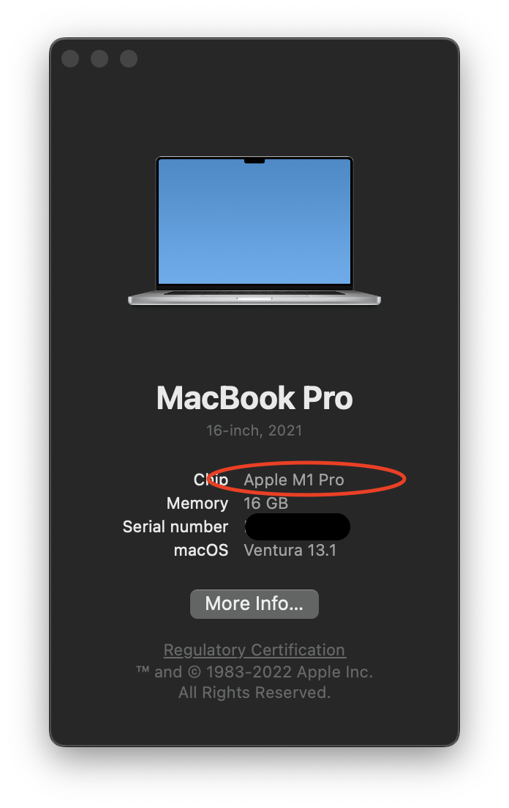

MonoGame Resources
Getting Started
The following are links to official MonoGame documentation explaining how to get set up and basic API usage.
Tutorials
Legacy Tutorials - these use terms and have screenshots from an older version of MonoGame, but include an example of more reusable code for sprite drawing that we'll look at in class.
- http://rbwhitaker.wikidot.com/monogame-introduction-to-2d-graphics
- http://rbwhitaker.wikidot.com/monogame-project-template
- http://rbwhitaker.wikidot.com/monogame-managing-content
- http://rbwhitaker.wikidot.com/monogame-spritebatch-basics
- http://rbwhitaker.wikidot.com/monogame-texture-atlases-1
- http://rbwhitaker.wikidot.com/monogame-drawing-text-with-spritefonts
Tips and Tricks
MonoGame on Apple Silicon
Using MonoGame on an Apple Mac using an Apple processor requires a few additional steps to follow during setup and while developing your project. Fortunately, it is fairly straight-forward.
How do you know if your Apple Mac uses an Apple processor?
There are a couple of ways. First, you can check the "About This Mac" dialog by going to Apple logo on the top-left corner of the screen, then selecting "About This Mac". Under "Chip", if the value starts with "Apple" then you're Mac is using an Apple processor. If it starts with "Intel" then you're Mac is using an Intel processor. See below for an example:
You can also look at the architecture of the running OS kernel with uname:
> uname -m
arm64
If the value written to stdout is arm64, then you're Mac is using an Apple
processor.
What is the issue?
The root issue is that MonoGame does not ship with arm64 versions of the
native binaries used for building game content (e.g. the MGCB tool). It does
support running games natively on arm64, just not building their content.
The incompatibility is most often seen as content build errors when building
your MonoGame project, such as:
.../Content/fonts/basic.spritefont : error : Processor 'FontDescriptionProcessor' had unexpected failure! [.../MonoGameTest1.csproj]
System.DllNotFoundException: Unable to load shared library 'freetype6' or one of its dependencies. In order to help diagnose loading problems, consider setting the DYLD_PRINT_LIBRARIES environment variable: dlopen(libfreetype6, 0x0001): tried: 'libfreetype6' (no such file), '/System/Volumes/Preboot/Cryptexes/OSlibfreetype6' (no such file), '/usr/lib/libfreetype6' (no such file, not in dyld cache), 'libfreetype6' (no such file), '/usr/local/lib/libfreetype6' (no such file), '/usr/lib/libfreetype6' (no such file, not in dyld cache)
at SharpFont.FT.FT_Init_FreeType(IntPtr& alibrary)
at SharpFont.Library..ctor()
at Microsoft.Xna.Framework.Content.Pipeline.Graphics.SharpFontImporter.Import(FontDescription options, String fontName) in /home/runner/work/MonoGame/MonoGame/MonoGame.Framework.Content.Pipeline/Graphics/Font/SharpFontImporter.cs:line 29
at Microsoft.Xna.Framework.Content.Pipeline.Processors.FontDescriptionProcessor.ImportFont(FontDescription options, Single& lineSpacing, Int32& yOffsetMin, ContentProcessorContext context, String fontName) in /home/runner/work/MonoGame/MonoGame/MonoGame.Framework.Content.Pipeline/Processors/FontDescriptionProcessor.cs:line 194
at Microsoft.Xna.Framework.Content.Pipeline.Processors.FontDescriptionProcessor.Process(FontDescription input, ContentProcessorContext context) in /home/runner/work/MonoGame/MonoGame/MonoGame.Framework.Content.Pipeline/Processors/FontDescriptionProcessor.cs:line 80
at Microsoft.Xna.Framework.Content.Pipeline.ContentProcessor`2.Microsoft.Xna.Framework.Content.Pipeline.IContentProcessor.Process(Object input, ContentProcessorContext context) in /home/runner/work/MonoGame/MonoGame/MonoGame.Framework.Content.Pipeline/ContentProcessor.cs:line 60
at MonoGame.Framework.Content.Pipeline.Builder.PipelineManager.ProcessContent(PipelineBuildEvent pipelineEvent) in /home/runner/work/MonoGame/MonoGame/MonoGame.Framework.Content.Pipeline/Builder/PipelineManager.cs:line 717
What do I need to do?
Fortunately, Macs with Apple processors ship with an x64 to arm64
translation layer that allows running x64 binaries on an arm64 system.
Therefore, we need to download, install, and use an x64 version of .NET to use
while building game content, to go along with the x64 native binaries shipped
by MonoGame for the MGCB tool.
Start by navigating to https://dotnet.microsoft.com/en-us/download/dotnet/6.0
and downloading the latest SDK installer for "macOS" and "x64". This will
install along-side the arm64 version you installed when going through the
"MonoGame Getting Started" guide. Then, add the following scripts to your
project directory:
build-content.sh:
#!/bin/sh
export PATH=/usr/local/share/dotnet/x64:$PATH
dotnet build
edit-content.sh:
#!/bin/sh
export PATH=/usr/local/share/dotnet/x64:$PATH
dotnet mgcb-editor
Whenever you need to modify the MGCB content project, just run
edit-content.sh. And when you need to rebuild your game content, just run
build-content.sh. Note, do not forget to make the scripts executable by
running chmod +x build-content.sh edit-content.sh before trying to run them.
These are only needed when modifying game content. When coding or debugging, you
can use the native arm64 .NET and MonoGame binaries. In other words, these
scripts should only be needed when you encounter a content build error like
shown above. When you see the error, run build-content.sh, then continue as
normal. Other team members using Windows or Macs with Intel processors can
ignore these scripts and just build the game project as normal.